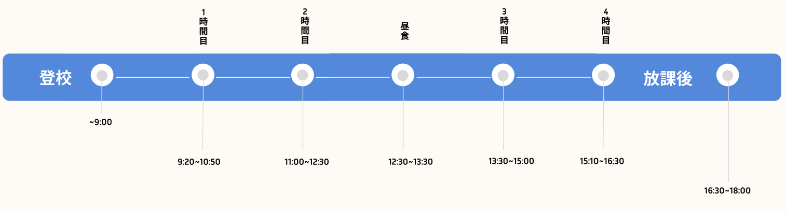

ドキドキの入学初日
今日はついに学校の初日でした。正直、朝はすごく緊張していて、「日本語の授業についていけるか な」「友だちできるかな」ってずっと考えていました。
もっと読む
Webデザイン科で出会う、
実践で学ぶ、使えるスキル
デザインの基礎だけでなく、Figma・Photoshop・Visual Studio Codeなど現場で使われているツール を実際に使って学習。卒業後すぐに現場で活かせるスキルが手に入ります。

考えて、作って、伝える力
ただ作るだけじゃない。企画、設計、制作、発表までを自分でやるから、「自分のア イデアをカタチにする力」が自然と身につく！ 将来、UI/UXデザイナーを目指す学生たちにもぴったりです。
留学生も安心の環境
同じように日本語や文化に不安を持って入学した先輩もたくさん！わからないときは助け合える 環境と、やさしくサポートしてくれる先生たちがいるから、安心してチャレンジできます。
一日の流れ
イラスト
この授業では、「どんな問題があるか」「どうやってよくするか」を自分で考えます。考える力と、アイデアを伝える力が、少しずつできるようになる授業です。
企画書プレゼん
この授業では、「どんな問題があるか」「どうやってよくするか」を自分で考えます。考える力と、アイデアを伝える力が、少しずつできるようになる授業です。
HTML&CSS
「Webサイトってどうやって作るの？」そんな疑問から始められる授業です。はじめてでも大丈夫。タグやスタイルの基本を学んで、自分だけのページを作れるように なります！
HTML&CSS
「Webサイトってどうやって作るの？」そんな疑問から始められる授業です。はじめてでも大丈夫。タグやスタイルの基本を学んで、自分だけのページを作れるように なります！
就職リテラシー
履歴書の書き方や自己PRの伝え方など、就職活動に必要なスキルを基礎から学びます。日本企業で働くためのマナーやルールも知ることができ将来の就職に向けた準備が しっかりと進められます。

UI . UX
PhotoshopやFigmaなどのツールを使い、使いやすく見た目も良いデザインの作り方を学び ます。ユーザーの気持ちを考えた設計方法を身につけます。
色彩演習
色の基本や組み合わせ方を学び、デザインで効果的に色を使う方法を身につけます。色の意味や心理効果も理解し、魅力的な作品づくりに役立てるようになる授業です。

JavaScript
JavaScriptの基本と、よく使われるライブラリやフレームワークについて学びます。動きのあるWebサイトを作るための技術を身につけれるようになる授業ます。
HOMEROOM
担任の先生が週ごとの様子や勉強の進み具合を聞き、今後の学校行事についても説明します。安心して学べる環境づくりをサポートする時間です。
在校生からのメッセージ
テッ ティハ チョー
Webデザイン科 1年生

カントポン
Webデザイン科 1年生
テッ ティハ チョー
Webデザイン科 1年生
一ヶ月の生活費公開
はじめまして!
Webデザイン科1年のカントポンです。
ここでは、私の1ヶ月の生活費（予算10万円）を円グラフで紹介します。
これから日本での生活を考えている方の参考になればうれしいです！
留学生窓口

留学生窓口は、学生生活のあらゆる不安や悩みに寄り添ってくれる、留学生にとって心強いサ ポート窓口です。ビザや住まい、アルバイトの相談はもちろん、授業や日常生活で困ったことなど、どんな小さなことでも気軽に相談できます。スタッフは多言語に対応しており、母国語でのサポートも可能ですが、「せっかく日本に来たからこそ、日本語を上達させてほしい」という想いから、やさしい日本語での対応を大切にしています。何よりも、あなたの日本での留学生活が充実したものになるよう、親身にサポートしてくれるあたたかい場所です。
オープンキャンパスで体験できること
Webデザイン科（2年制）
企画からプレゼンまで、Web制作のすべてを学ぶ!実践課題の一例
「お菓子のプロモーションサイト」を企画から制作！目指せる職種
Webデザイナー、UI・UXデザイナー、Webプログラマ学科のブログ
アクセス
日本電子専門学校
7号館771号室
〒169-0074 東京都新宿区北新宿１丁目４−２ 日